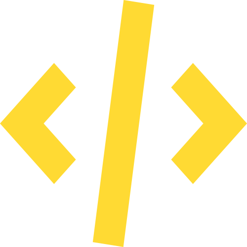
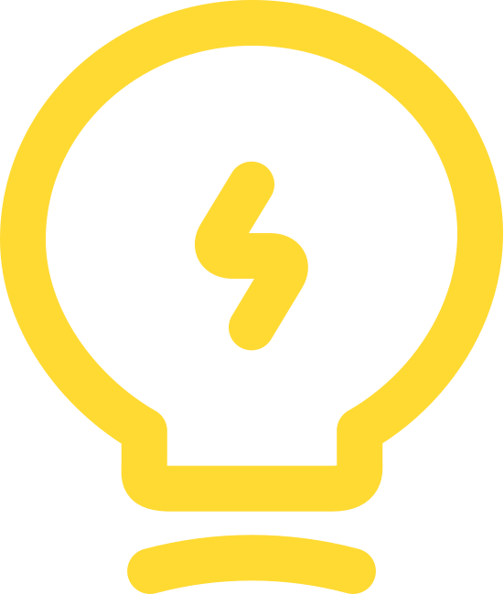

WAGES OF SIN
PROJECT, PROCESS & CONTEXT
DEMO
A formal presentation of Wages of Sin as an game design project -- its objectives, methodology, development context and future trajectory
01
PROJECT OBJECTIVE
Abyssal was conceived as an academic capstone project exploring the intersection of literary theory and interactive game design. The primary objective is to demonstrate that a complex narrative structure — specifically Dante Alighieri's Divine Comedy — can be meaningfully translated into mechanical and environmental game design without reducing the source material to mere aesthetic overlay. The project asks: can a game be a scholarly argument?

02
PROTOTYPE EXPLANATION
The academic prototype constitutes a playable vertical slice of the game's first realm — the Inferno. Built in a 2D engine with hand-crafted tileset systems, the prototype demonstrates core metroidvania mechanics including ability-gated progression, non-linear room traversal, and a rudimentary enemy AI system modeled on symbolic interpretations of the seven deadly sins. The prototype is submitted as evidence of technical feasibility and design coherence.
03
ACADEMIC CONTEXT
This project was developed within the Game Design and Digital Media program, under the supervision of the Faculty of Arts and Digital Technologies. The theoretical framework draws on ludology, narratology, and comparative literature scholarship — particularly the works of Jesper Juul, Janet Murray, and Dante Alighieri scholarship from the medieval and contemporary traditions. Abyssal represents one of the first projects in the program to attempt a full structural mapping of classical literature to game architecture.

04
FUTURE FULL VERSION VISION
Beyond the academic context, Abyssal is envisioned as a full indie release on desktop platforms. The complete vision encompasses all three realms with an estimated 12–18 hours of gameplay, a fully reactive narrative system, and an original gothic orchestral soundtrack. The aesthetic identity — dark fantasy elegance with literary depth — positions the project within the growing market of art-forward indie games pioneered by titles like Hollow Knight, Hades, and Disco Elysium.